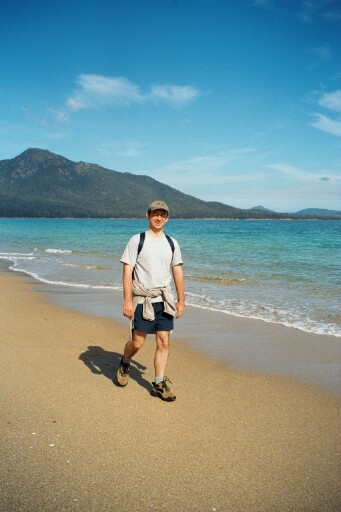

Van Diemen\'s Land
Tasmania, Australia
When we first started out from our apartment that Saturday morning everything seemed to be against us. We were both painfully hungover, our flight to Melbourne was delayed, we missed our connecting flight to Launceston and ended up in Hobart late at night with our hire car waiting for us in Launceston and no hotel booking. Luckily for us, everyone was extremely flexible and all was sorted, but it really made us wonder what would’ve happened if we’d been in UK. No doubt we would’ve lost deposits and ended up without a hire car at best.
Neither of us really knew what to expect of the smallish island off the Victorian coast affectionately known as Tassie by the folk over here. The only person we’d met who had visited the island said it was like Wales, only more unpleasant. So, our hopes weren’t exactly that high. But, unless Wales has changed quite dramatically since we last saw it and now has bays of golden sand and turquoise waters, then the person’s reports were way out!
We spent a day down in Port Arthur – a former penal settlement set up in 1833. Port Arthur was where re-offenders were sent. So, if you committed a crime while in jail you were sent here, to the southernmost tip of Van Diemen’s Land, to see out your days. Governor Arthur saw it as a huge grinding machine - he would place the criminals in one end and repentant souls would be spat out at the other. The prisoners, in the early days, were disciplined by flogging. This later gave way to the harsher punishment of solitary confinement and silence until the settlements demise in 1877, by which time 12,000 prisoners had served their sentences here. Perhaps the fact that the Port Arthur machine was open for only 44 years is testament to the fact that Governor Arthur’s system wasn’t exactly successful.
We booked ourselves on the nightly ghost tour. This was, to my great surprise, Sue’s idea. Why the surprise? Well, Sue isn’t exactly the bravest of the brave when it comes to ghosts and ghouls! Aside from the fact that she isn’t too keen on the dark, she is also unnerved by old Hammer House movies!! So, things didn’t bode so well when we set out that night. But, she was so into the idea that I didn’t want to put a spanner in the works!
First off, the guide asked for three volunteers to hold the paraffin lamps. Sue very enthusiastically put her hand up and when asked, “Front, middle or back?” opted for the back, later admitting that she hadn’t actually thought about the words before they came out! First stop was the old church. Second stop, Australia’s most haunted house, where Sue turned to me to tell me that she felt sick with fear. An hour later we were in the cells where we were told that an archaeologist recently felt herself being compelled to enter a cell and was found much later sobbing in the corner and unable to move. As we walked along the corridor, Sue kept in a perfect line down the middle so she wouldn’t be too close to any of the cell doors lest the same fate beheld her! There were even times on the tour when she kept her eyes firmly to the ground, completely forgetting that she’d agreed, as the last lamp carrier, to check that no one had been left behind. Apparently, she had decided very early on that if there was anything spooky to be seen then she most certainly didn’t want to see it. I even caught her holding her breath in a cellar where the guide said people often smelt a ghostly scent of formaldehyde. Needless to say, this was our first and last ghost tour ever!
Neither of us really knew what to expect of the smallish island off the Victorian coast affectionately known as Tassie by the folk over here. The only person we’d met who had visited the island said it was like Wales, only more unpleasant. So, our hopes weren’t exactly that high. But, unless Wales has changed quite dramatically since we last saw it and now has bays of golden sand and turquoise waters, then the person’s reports were way out!
We spent a day down in Port Arthur – a former penal settlement set up in 1833. Port Arthur was where re-offenders were sent. So, if you committed a crime while in jail you were sent here, to the southernmost tip of Van Diemen’s Land, to see out your days. Governor Arthur saw it as a huge grinding machine - he would place the criminals in one end and repentant souls would be spat out at the other. The prisoners, in the early days, were disciplined by flogging. This later gave way to the harsher punishment of solitary confinement and silence until the settlements demise in 1877, by which time 12,000 prisoners had served their sentences here. Perhaps the fact that the Port Arthur machine was open for only 44 years is testament to the fact that Governor Arthur’s system wasn’t exactly successful.
We booked ourselves on the nightly ghost tour. This was, to my great surprise, Sue’s idea. Why the surprise? Well, Sue isn’t exactly the bravest of the brave when it comes to ghosts and ghouls! Aside from the fact that she isn’t too keen on the dark, she is also unnerved by old Hammer House movies!! So, things didn’t bode so well when we set out that night. But, she was so into the idea that I didn’t want to put a spanner in the works!
First off, the guide asked for three volunteers to hold the paraffin lamps. Sue very enthusiastically put her hand up and when asked, “Front, middle or back?” opted for the back, later admitting that she hadn’t actually thought about the words before they came out! First stop was the old church. Second stop, Australia’s most haunted house, where Sue turned to me to tell me that she felt sick with fear. An hour later we were in the cells where we were told that an archaeologist recently felt herself being compelled to enter a cell and was found much later sobbing in the corner and unable to move. As we walked along the corridor, Sue kept in a perfect line down the middle so she wouldn’t be too close to any of the cell doors lest the same fate beheld her! There were even times on the tour when she kept her eyes firmly to the ground, completely forgetting that she’d agreed, as the last lamp carrier, to check that no one had been left behind. Apparently, she had decided very early on that if there was anything spooky to be seen then she most certainly didn’t want to see it. I even caught her holding her breath in a cellar where the guide said people often smelt a ghostly scent of formaldehyde. Needless to say, this was our first and last ghost tour ever!

Wine Glass Bay from a prime lookout spot

Nathan striding out across Wine Glass Bay

The ruins of the former penal settlement of Port Arthur

The penitentiary at Port Arthur on a particularly gloomy day